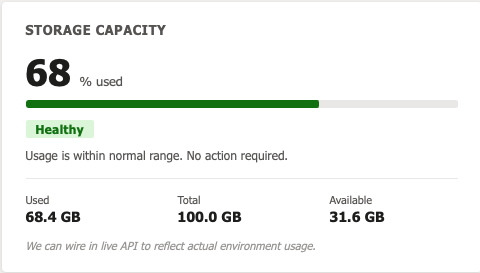

Day 9 — From System to Product: Building the First Tools


Up until this point, most of the work has been focused on building the system itself. Getting OpenClaw running, wiring it into Azure DevOps, stabilizing execution, and understanding its limitations. All of that was necessary, but it was still one step removed from the actual goal.
Today was the first time things shifted from building the system to building the product.
The first step was standing up a fresh Dynamics environment. Instead of working in isolation, I wanted to build directly in a platform that reflects real-world usage. Alongside that, I created the initial tables needed to support what will eventually become a system optimization and maintenance solution.
With the environment in place, the next decision was what to actually build. Rather than trying to tackle everything at once, I narrowed the scope down to three initial tools: a stalled process panel, a capacity forecaster, and an unused asset tracker.
This was a deliberate choice. Each of these tools targets a specific type of problem I have seen repeatedly. Processes that get stuck and go unnoticed. Database growth that is only addressed once it becomes expensive. Data and configuration that accumulate over time without being used. These are not edge cases. They are patterns.
With that direction set, I moved into building the first versions of these tools using the automation pipeline I had been working on. Instead of manually creating everything, I used the system to generate initial HTML web resource mockups for each of the three tools.
This was a key moment in the project. For the first time, the system was not just being tested. It was being used to actually build something that fits into the larger vision.
From there, I started transitioning those mockups into JavaScript-based web resources that could be used within Dynamics. This is where things became more hands-on again. The generated output was a starting point, but it still required review, adjustments, and an understanding of how it would function within the platform.
I focused first on the stalled process panel. I reviewed the generated code, made adjustments where needed, and then brought it into Dynamics as a web resource for testing. This was the first time I was able to see one of these tools begin to take shape inside the actual environment.
What stood out during this process was the shift in my role. I was not just writing code, and I was not just prompting an AI. I was reviewing, guiding, and making decisions about what should and should not be included. The AI was producing output, but I was responsible for shaping it into something usable.
This reinforced something that has been building throughout this project. The value is not in having an AI that can generate code. The value is in designing a system where that code can be generated, evaluated, and integrated into a broader product.
By the end of the day, I had the foundation of all three tools mocked out and the first one partially implemented and tested within Dynamics. It is still early, and there is a lot to refine, but this is the first time the project feels like it is producing something tangible.
The next step is to continue building out these tools, refine their functionality, and start thinking about how they connect together as part of a cohesive system. The system is now in place. Now it is time to see what it can actually produce.